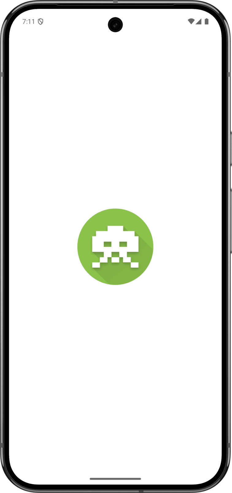

Words Invaders - Mobile Application
Mobile game like Space Invaders where you're attacked by falling words — shoot them before they hit you!
Dart
Flutter
Mobile game like Space Invaders where you're attacked by falling words — shoot them before they hit you!
Words Invaders is a mobile arcade game that reimagines the classic Space Invaders formula: instead of alien ships, words fall from the top of the screen in three columns, and the player has to type each one correctly before it reaches the bottom.
It has a retro 80s pixel-art look: an animated star field, a neon green, yellow and blue palette, monospace fonts and a custom virtual keyboard.
Difficulty ramps up across nine levels as both the word length and the falling speed increase, while the best score and level are saved on the device.
Letters already matched are highlighted live on the falling word, every keystroke fires a laser sound, and a destroyed word bursts into particles with simulated gravity. Three lives are lost whenever a word hits the bottom, and a level-up screen celebrates each new stage.

A single Flutter application written in Dart for Android and iOS. Spawn and fall speeds are driven by timers that shorten with every level, explosions and the star field are drawn with custom painters, and scores are stored locally.
Core language for all game logic: state management, word-spawning and scoring rules, level progression, and the timer-driven game loop.
Cross-platform UI framework used to build the entire app — home, game, and game-over screens, animations, and the virtual keyboard — from a single Android/iOS codebase.
Used to hand-draw the animated star field and the particle-based explosion/laser effects directly on the canvas for smooth, lightweight visuals.
Persists the player's high score and highest level reached locally on the device between game sessions.
Plays the game's sound effects (laser/typing sound) in sync with player input during a run.